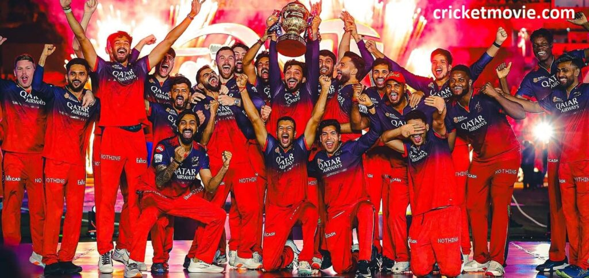
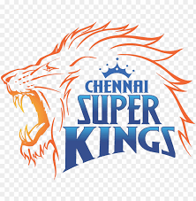
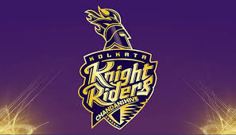
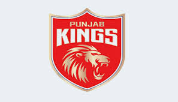
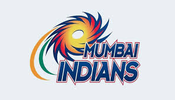
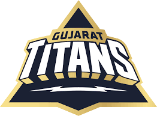
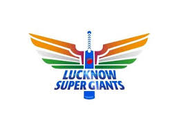
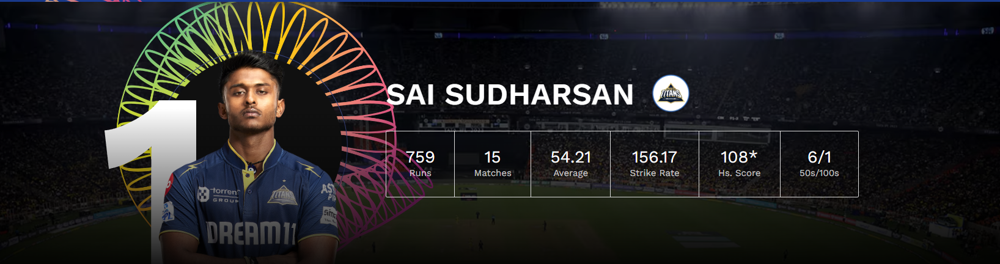
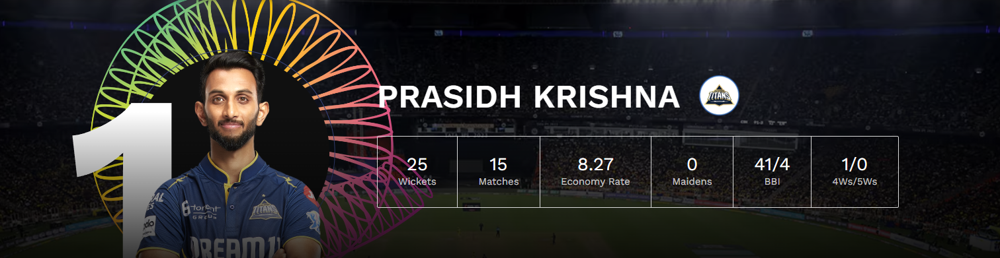

🏆 Champion
Royal Challengers Bengaluru clinched their first-ever IPL title by defeating Punjab Kings in a nail-biting final.
📅 Tournament Dates
March 22 – June 3, 2025
📍 Venues
Matches were played across 13 venues, later reduced to 6 due to geopolitical tensions.
👥 Participating Teams
-  Chennai Super Kings
-  Kolkata Knight Riders
 Rajasthan Royals
Rajasthan Royals- Royal Challengers Bengaluru
- Punjab Kings
- Mumbai Indians
 Sunrisers Hyderabad
Sunrisers Hyderabad- Gujarat Titans
 Delhi Capitals
Delhi Capitals- Lucknow Super Giants
🌟 Top Performers
- Most Runs: Sai Sudharsan (GT) – 759 runs 
- Most Wickets: Prasidh Krishna (GT) – 25 wickets 